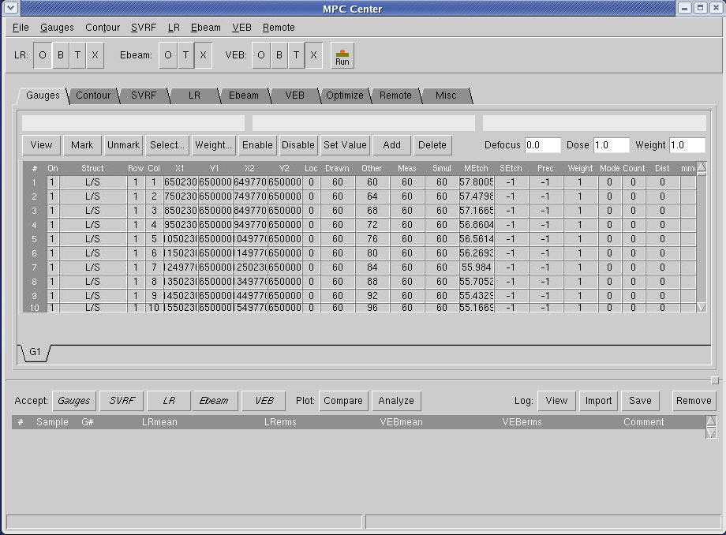

Load the corrected
short range measurements into MPC Center.
Procedure
- Invoke Calibre WORKbench.
- Load a test pattern file into
Calibre WORKbench. This file must be flat.
- In Calibre WORKbench, select Tools > MPC Center to open
the MPC Center.
- In MPC Center, select the Gauges > Open menu option.
Import the proximity data gauge file. It should appear in the Gauges
tab in MPC Center (Figure 1).
Figure 1. Gauge Object